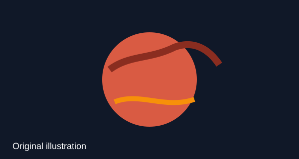

Mars
Mars is the fourth planet from the Sun. It is a cold desert world with a thin atmosphere, polar ice caps, extinct volcanoes, canyons, and weather. Reference: NASA Mars Facts

Image note: This is an original SVG illustration made for this project.